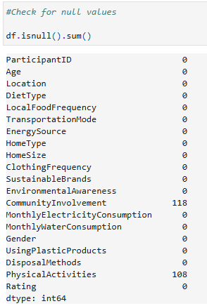
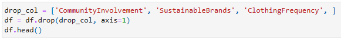
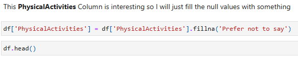

Lifestyle Sustainability EDA
This exploratory data analysis (EDA) examines resource consumption, physical activity, waste management, and dietary habits to identify sustainability trends.
By analyzing electricity and water usage across locations, tracking plastic disposal methods, and assessing lifestyle choices across age groups,
this study provides insights into sustainable living practices and areas for improvement.
Here are the problems that I have solved, following some of its answers:
Data Source
The data used in this project was sourced from Kaggle.
Data Cleaning
Before diving into exploratory data analysis (EDA), I ensured the dataset was clean and structured for accurate insights. The following steps were taken:
-
Checked dataset structure using
df.info()to understand column types and detect any inconsistencies.
-
Identified missing values with
df.isnull().sum()to determine the extent of missing data. Community Involvement and Physical Activities had null values. -
The columns CommunityInvolvement, SustainableBrands, and ClothingFrequency
were unrelated to the key objectives of the EDA, so they were removed to maintain a focused and efficient analysis.

-
The column PhysicalActivities was interesting despite having many null values, and I found it essential for the analysis.
Missing values were filled with Prefer not to say since they likely represent respondents who chose not to disclose this information.

Data Analysis Techniques
Descriptive analysis was utilized to summarize and interpret key aspects of sustainability and lifestyle trends across various demographic groups and locations. The analysis involved:
- Average monthly electricity and water consumption for each location to identify regional patterns in resource usage.
- Count of physical activities based on gender to explore participation differences in sustainable physical practices.
- Frequency of plastic use and the disposal methods used for each location to evaluate sustainability practices related to waste management.
- Categorizing participants into age brackets (e.g., 18-26 as Adolescence) to better understand age-based trends and behaviors.
- Analyzing DietType based on age bracket and gender to explore how these factors influence dietary preferences related to sustainability.
This approach provides an overall view of how different demographic variables contribute to sustainable lifestyle choices and behaviors.
Data Visualization
To bring the Lifestyle Sustainability EDA to life, different visualizations were used to make the insights clear and engaging. A bar graph was the best fit to compare resource consumption across locations and physical activity levels by gender, giving a straightforward look at how these factors vary. Since comparing categories side by side can get messy, a horizontal bar graph made it easier to visualize plastic usage and disposal methods per location, keeping everything neat and readable. Finally, a heatmap was the perfect choice for showcasing diet types across different age groups, revealing patterns in dietary preferences at a glance. These visualizations not only make the data easier to digest but also highlight key sustainability trends that might otherwise go unnoticed.
Conclusion
This exploratory data analysis examines lifestyle sustainability across different demographics, focusing on resource consumption, physical activity, plastic usage, disposal methods, and diet preferences. The findings reveal how location, gender, and age influence sustainable habits.
- Resource Consumption
- Rural areas have the highest water and electricity consumption, though the differences across locations are slight.
- Physical Activity
- Females engage in "High" levels of physical activity the most. Other genders show a more balanced distribution in activity levels.
- Plastic Usage
- Urban residents "Often" use plastic products. Suburban residents "Sometimes" use plastic. Rural residents "Rarely" use plastic.
- Disposal Methods
- Suburban areas primarily use Recycling. Urban areas lean towards Composting and Landfills. Rural areas commonly use a Combination method or Landfills.
- Diet Preferences by Age Group
- Nearly half of middle-aged individuals follow a Plant-based diet. Seniors have an equal distribution of diet types. Young adults also have a balanced diet distribution but lean slightly toward a Balanced diet.
The analysis highlights noticeable patterns in sustainability behaviors, emphasizing the impact of environment and demographics. These insights can help guide targeted efforts to promote more sustainable practices in different communities.